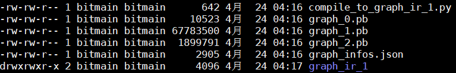

AutoSplit¶
AutoSplit 是一个一键式的离线模型自动切分与编译工具。 对于一个无法完整部署到 TPU 上的模型，AutoSplit 可以自动化地将其切分为一系列子模型， 并可以调用 BMCompiler 将其中部分可以部署到 TPU 上的子模型编译为 bmodel，例如下图的 fasterrcnn 模型。
用户无须关心模型的切分细节与如何编译生成 bmodel，生成的子模型可以用 auto_runner 中提供的接口进行推理。 AutoSplit 源码位于 “module/auto_split/” 目录下，目前支持 tensorflow/mxnet。 我们在 “auto_split.api” 中提供了两个函数，它们分别是：
- split：
将需要部署的模型自动切分成若干子模型， 把子模型保存至指定目录并将相关参数保存至目录下的 graph_infos.json 文件中。
- convert：
解析指定目录下的 graph_infos.json 文件，将目录下所有可在 TPU 上部署的模型编译为 bmodel。
graph_infos.json¶
AutoSplit 可以将模型自动切分为多个子模型， 因此我们定义了一种保存切分后的子模型的方式。 上图展示了将 tensorflow detection model zoo 中的 ssd_mobilenet_v2_coco_2018_03_29 (http://download.tensorflow.org/models/object_detection/ssd_mobilenet_v2_coco_2018_03_29.tar.gz) 拆分后生成的子模型。
图中的 “graph_0.pb”、“graph_1.pb”、“graph_2.pb” 是拆分后生成三个子模型， 它们是经过拓扑排序的，也就是说给定输入，顺序执行这三个子模型， 输出的结果跟原始未切分的模型是一致的。
图中的 compile_to_graph_ir_1.py 脚本通过调用 BMCompiler(bmnett) 将 graph_1.pb 编译成 bmodel 并保存在 graph_ir_1/ 中。
graph_infos.json 文件中包含了子模型的信息。 包括：
- graphs：
一个列表，其中每个元素中都包含了一个子模型的 “输入名称(inputs)”、“输出名称(outputs)”、“运行设备(cpu或tpu)”、“模型路径信息(model_info)”， 如果运行设备为 tpu，那么还会包含 bmodel 所在的路径(context_dir)。
- tensors：
包含了所有子模型的输入和输出张量的信息，这些张量分为三类：“input”、“output”、“intermediate”， 其中 “input”、“output” 表示该张量是原始模型的输入输出，而 “intermediate” 表示该张量是切分后产生的中间张量。
- graph_num：
切分后子模型的数量。
- platform：
原始模型所基于的深度学习框架，目前支持 tensorflow 和 mxnet。
- dynamic：
动态代表模型的输入张量是尺寸是可变的，如果是动态的，那么 tensors 中的尺寸信息为最大的尺寸。
- layout：
原始模型的 layout，NHWC 或者 NCHW。
下面展示了上图中的 graph_infos.json 中的内容：
{ "graphs": [ { "outputs": [ "Preprocessor/map/TensorArrayStack/TensorArrayGatherV3:0", "Postprocessor/zeros_like_1:0", "Postprocessor/div_1:0", "Postprocessor/div:0", "Postprocessor/zeros_like:0" ], "model_info": { "model_path": "graph_0.pb" }, "inputs": [ "image_tensor:0" ], "device": "cpu" }, { "outputs": [ "Squeeze:0", "Postprocessor/convert_scores:0", "Postprocessor/Reshape_1:0" ], "model_info": { "model_path": "graph_1.pb" }, "inputs": [ "Preprocessor/map/TensorArrayStack/TensorArrayGatherV3:0" ], "device": "tpu", "context_dir": "graph_ir_1" }, { "outputs": [ "detection_boxes:0", "num_detections:0", "detection_classes:0", "detection_scores:0" ], "model_info": { "model_path": "graph_2.pb" }, "inputs": [ "Postprocessor/div:0", "Squeeze:0", "Postprocessor/convert_scores:0", "Postprocessor/zeros_like_1:0", "Postprocessor/zeros_like:0", "Postprocessor/div_1:0", "Postprocessor/Reshape_1:0" ], "device": "cpu" } ], "tensors": { "Postprocessor/div:0": { "shape": [ 1 ], "attr": "intermediate" }, "Squeeze:0": { "shape": [ 1, 1917, 4 ], "attr": "intermediate" }, "Postprocessor/convert_scores:0": { "shape": [ 1, 1917, 91 ], "attr": "intermediate" }, "Postprocessor/zeros_like_1:0": { "shape": [ 1 ], "attr": "intermediate" }, "num_detections:0": { "shape": [ 1 ], "attr": "output" }, "Postprocessor/zeros_like:0": { "shape": [ 1 ], "attr": "intermediate" }, "detection_classes:0": { "shape": [ 1, 100 ], "attr": "output" }, "detection_boxes:0": { "shape": [ 1, 100, 4 ], "attr": "output" }, "Postprocessor/div_1:0": { "shape": [ 1 ], "attr": "intermediate" }, "detection_scores:0": { "shape": [ 1, 100 ], "attr": "output" }, "Preprocessor/map/TensorArrayStack/TensorArrayGatherV3:0": { "shape": [ 1, 300, 300, 3 ], "attr": "intermediate" }, "image_tensor:0": { "shape": [ 1, 500, 500, 3 ], "attr": "input" }, "Postprocessor/Reshape_1:0": { "shape": [ 1917, 4 ], "attr": "intermediate" } }, "graph_num": 3, "platform": "tensorflow", "dynamic": false, "layout": "NHWC" }
split¶
该函数可以将无法完整部署在 TPU 上的深度学习模型自动切分为若干子模型。 主要功能通过 Splitter 类实现，我们在基类 Splitter 中定义了模型切分的流程， 任何子类在实现了一系列的虚函数(例如判断某个 op 是否是支持的 is_op_support)后， 通过调用 convert_and_split 函数可完成模型切分。 切分的算法是各个子类共用的，实现在 auto_deploy.common.graph 模块中。
split 函数说明如下， 如果您想了解模型切分的细节，或者需要实现一个新的 Splitter， 可以参考模块： auto_deploy.common.base_splitter 、 auto_deploy.common.graph 、 auto_deploy.splitter
@exception_wrapper(message="Met an Error when split model.") def split(platform, input_tensors, save_dir, graph_path, \ params_path=None, outputs=None, dynamic=False, layout='NCHW'): """ Split the raw model into several submodels. Args: platform: Platform that trained the model. Options: tensorflow, mxnet, pytorch, caffe input_tensors: A dict contains the information of input tensors. Format: {input_name: numpy.ndarray} save_dir: Path of directory to save submodels and splitting information. graph_path: Path to the graph description file of the model. params_path: Path to the parameters file of the model. Default None. outputs: A list contains the output tensor names. Default None. dynamic: True means input tensor shapes may change. Default False. layout: Layout of tensor. Default 'NCHW'. Returns: None. """
convert¶
该函数可以将切分后的模型中的可以在 TPU 上运行的模型编译成 bmodel， 其依据是 graph_infos.json 文件中每个 graph 中的 device。 如果 device 是 tpu，那么会调用对应深度学习框架下的 BMCompiler 对模型进行编译。 功能通过 Compiler 类实现，每个子类需封装对应深度学习框架下的 BMCompiler。
convert 函数说明如下，详见模块： auto_deploy.common.base_compiler 和 auto_deploy.compiler 。
@exception_wrapper(message="Met an Error when compile model.") def convert(folder, optimize=None, compare=False, target='BM1682'): """ Compile all the subgraphs which can deploy on sophon. Args: folder: path that contains splitted models, 'graph_infos.json' must be under this folder Format of 'graph_infos.json': { "graph_num": graph_numbmer, "platform": "mxnet" "layout": "NCHW" "dynamic": False "graphs": [ { "device": "cpu", "inputs": list of input tensor names, "outputs": list of output tensor names, "model_info": { "json": json_file_path, "params": params_file_path } } ] "tensors": [ { "name": name, "shape": list for shape, "attr": "input" or "output" or "intermediate" } ] } optimize: optimizing mode, parameter of bmnet compiler. compare: if compare with cpu results when compiling. target: 'BM1682' or 'BM1684'(future). Returns: None. """